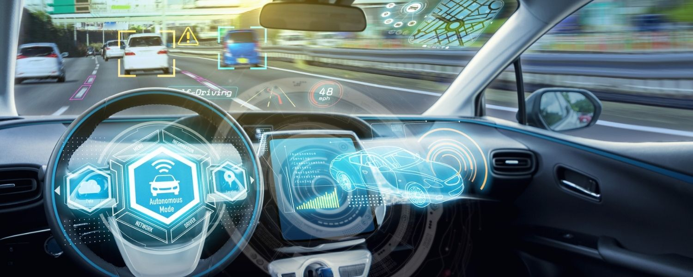

Article 2
L'IA dans le secteur automobile

AVENIR DE LA VOITURE AUTONOME
L’intelligence artificielle est en train de changer le paysage de l’industrie des voitures électriques. Elle fait apparaître des innovations et les optimise sans cesse pour les rendre meilleures, c’est un élément clé pour la transition écologique des entreprises.
Réduction de l'empreinte carbone grâce à l'IA en améliorant l’efficacité énergétique et en optimisant les trajets, l’IA contribue à la réduction de l’empreinte carbone. Les technologies vertes associées à l’IA pourraient donc jouer un rôle central dans l’atteinte des objectifs de régulation environnementale, cela de plusieurs façons :
optimisation de la consommation de carburant : les algorithmes d’apprentissage automatique permettent d’analyser les habitudes de conduite et d’ajuster ensuite les paramètres de la voiture électrique.
véhicules autonomes : ils économisent leur carburant en optimisant leur itinéraire et leur vitesse, cela réduit en conséquence les émissions de carbone.
fabrication de véhicules : ils réduisent les émissions de carbone aussi lors de leur fabrication grâce à des processus optimisés. Cela a également l’avantage de réduire la consommation d’énergie.
véhicules électriques : l’IA permet de mieux utiliser la batterie de son véhicule électrique et de prolonger sa durée de vie. En encourageant les voitures propres au lieu des modèles thermiques, cela permet de réduire les émissions de carbone.
entretien des véhicules : l’IA permet de prédire quand un véhicule a besoin d’être entretenu, ce qui peut améliorer l’efficacité du véhicule et réduire les émissions.